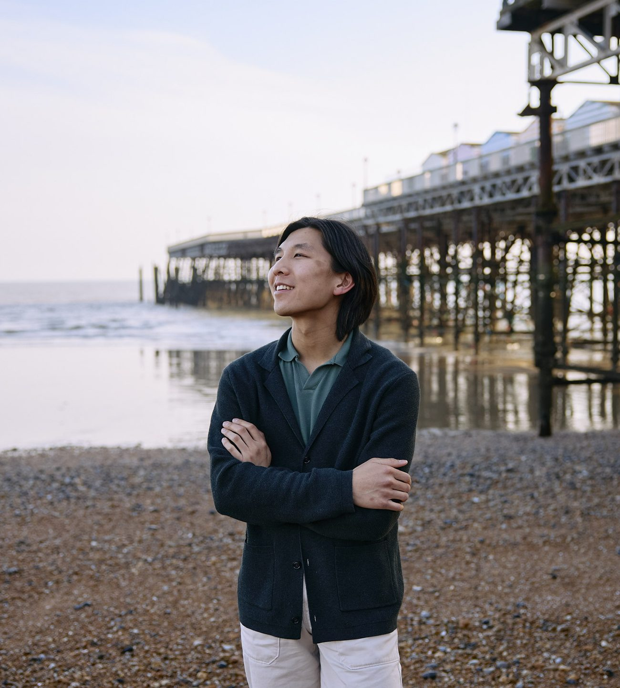

About
Canadian pianist Ryan Zhu began his musical studies at the age of four and has since performed on concert stages across North America and Europe, presenting a broad range of repertoire and musical styles.
In 2026, Zhu won First Prize and the Hastings Fellowship at the Hastings International Piano Competition, as well as the orchestra prize and the audience prize. In 2024, he was one of ten semifinalists at the Leeds International Piano Competition, where he was also awarded the G. Henle Verlag Prize, and in November he advanced to the semifinals of the Hamamatsu International Piano Competition.
In 2023, Zhu won the Juilliard School Gina Bachauer International Piano Competition, which brought a full tuition scholarship for the 2023–24 school year and a place in the gala concert that September, broadcast on WQXR. He was also a semifinalist in the Young Concert Artists Susan Wadsworth International Auditions. That same year, he was named the Calgary Philharmonic Orchestra’s Emerging Young Artist, performing with Charles Richard-Hamelin and the orchestra. In 2022, he won second prize at the Juilliard School Mieczyslaw Munz Piano Competition, and in 2021 he was named to CBC Classical’s “30 Under 30 Hot Canadian Classical Musicians.”
Zhu is an active participant in the Lieven Foundation Piano Festival. He has also taken part in festivals including the Four Seasons Chamber Music Festival Spring Workshop (2023), the Kneisel Hall Chamber Music Festival (2022), and the Morningside Music Bridge Young Artists Festival (2021), where he took second place in the concerto competition. At the 13th Mariinsky International Piano Festival in 2018, he presented a solo recital and appeared as a soloist with the Mariinsky Theatre Orchestra.
Zhu has also won numerous prizes at the Thomas and Evon Cooper International Piano Competition, the Philadelphia International Piano Competition, Canadian Music Competitions, and the Vancouver Academy of Music Symphony Orchestra Concerto Competition. He has appeared as a soloist in cities including London, Hastings, St. Petersburg, Nice, Lucerne, Philadelphia, Vancouver, Salt Lake City, and Los Angeles. In addition to collaborating with the Royal Philharmonic Orchestra, Calgary Philharmonic Orchestra, and Mariinsky Theatre Orchestra, he has performed with the Vancouver Metropolitan Orchestra, Vancouver Academy of Music Symphony Orchestra, Richmond Orchestra, Lions Gate Sinfonia, and West Coast Symphony.
Zhu holds a Bachelor of Music degree from the Juilliard School, where he studied with Robert McDonald and Stephen Hough. He is currently pursuing a Master of Music degree at the Yale School of Music with Melvin Chen. Since 2017, he has been mentored by pianist Mira Yevtich. He has previously studied with Michelle Mares, Kenneth Broadway, and Ralph Markham.